THE ROAD AHEADLA RUTA TE ESPERA
The road is more hole than asphalt, and the only way through is fast. Steer around the potholes, grab every coin you can, and save your jump for when you really need it. Every coin you bring home goes into the bank, to buy a tougher or faster car and a trail to show off with.
La ruta tiene más pozo que asfalto, y la única forma de pasar es ir rápido. Esquiva los baches, recoge todas las monedas que puedas y guarda el salto para cuando de verdad lo necesites. Cada moneda que traes a casa va al banco, para comprar un auto más resistente o más rápido y una estela para lucirte.
On the Commodore 128, a full day goes by every two minutes, through five landscapes, with the radio on. How long can you last?
En la Commodore 128, un día entero pasa cada dos minutos, por cinco paisajes, con la radio prendida. ¿Cuánto vas a aguantar?
ON THE ROADEN LA RUTA
-
Potholes.Baches. Each one costs your car a bar of strength. The longer you drive, the more there are. Cada uno le cuesta a tu auto una barra de fortaleza. Cuanto más conduces, más hay.
-
Coins.Monedas. Your score and your money. They drift slower than the road, so they come to you. Son tu puntaje y tu dinero. Van más despacio que la ruta, así que vienen hacia ti.
-
Cones and obstacles.Conos y obstáculos. Don't run them over: jump them, and they pay for every instant you hang above. Right under your car at the top of the jump: a perfect jump, +10. No los atropelles: sáltalos, y te pagan por cada instante que pasas encima. Justo debajo de tu auto en lo más alto del salto: salto perfecto, +10.
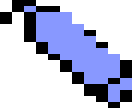
Jump tanks.Tanques de salto. One jump each. Up in the air, potholes can't touch you, but you can't steer either. Un salto cada uno. En el aire, los baches no te tocan, pero tampoco puedes girar.-
Wrenches.Llaves. Give back a bar of strength as soon as you touch one. They keep coming as long as your car is missing some. Te devuelven una barra de fortaleza apenas las tocas. Siguen apareciendo mientras a tu auto le falte alguna.
-
Medals.Medallas. Seven to win, from cone points to surviving a whole hour. One of them is a secret. Siete para ganar, desde los puntos de cono hasta aguantar una hora entera. Una es secreta.
FIVE LANDSCAPESCINCO PAISAJES
The country, the pine woods, the snow, the desert and the city, in no fixed order. Each one lasts a little over half a minute and brings its own obstacle in place of the cone, which pays the same if you jump it. At night the scenery gets darker.
El campo, los pinares, la nieve, el desierto y la ciudad, sin un orden fijo. Cada uno dura poco más de medio minuto y trae su propio obstáculo en lugar del cono, que paga lo mismo si lo saltas. De noche el paisaje se oscurece.
-
Country: hay bales.Campo: fardos de paja. They roll toward you. Hit one and it flies off, then falls back onto the road further ahead. Ruedan hacia ti. Si chocas uno sale volando, y vuelve a caer en la ruta más adelante.
-
Pine woods: logs.Pinares: troncos. They don't fly: a log bumps your car up and pushes it back. It costs no strength, only ground. No salen volando: un tronco hace saltar tu auto y lo empuja hacia atrás. No cuesta fortaleza, solo terreno.
-
Snow: snowmen and snowballs.Nieve: muñecos y bolas de nieve. A snowball rolls and grows as it comes. And the road is icy: ICE AHEAD and a bell warn you, then your car slides, so steer gently. La bola rueda y crece mientras viene. Y la ruta está helada: ICE AHEAD y una campana te avisan, y después tu auto resbala, así que gira con suavidad.
-
Desert: tumbleweeds.Desierto: plantas rodadoras. They bounce along faster than the road. Hit one and the wind takes it away. Van rebotando, más rápido que la ruta. Si chocas una, se la lleva el viento.
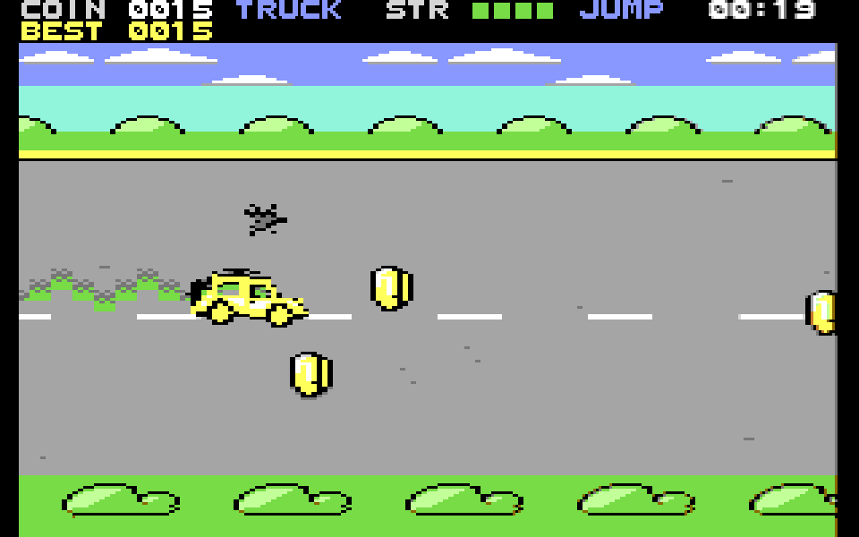
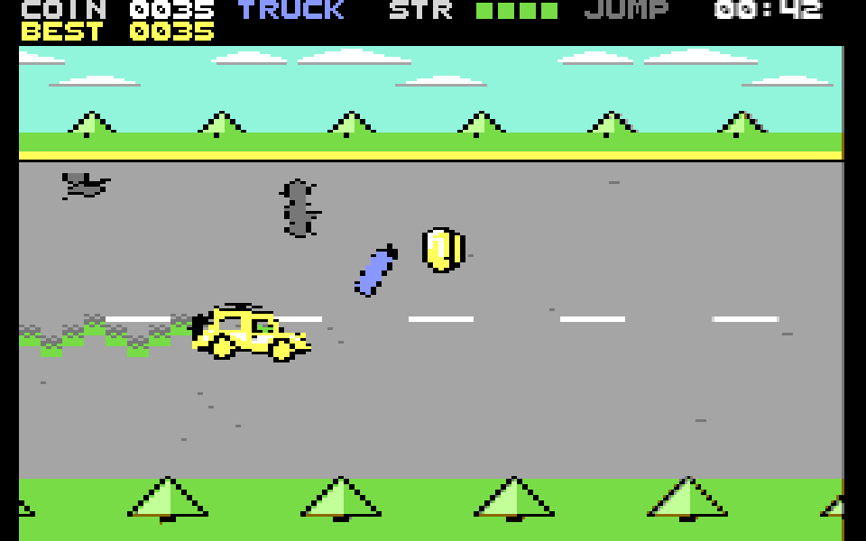
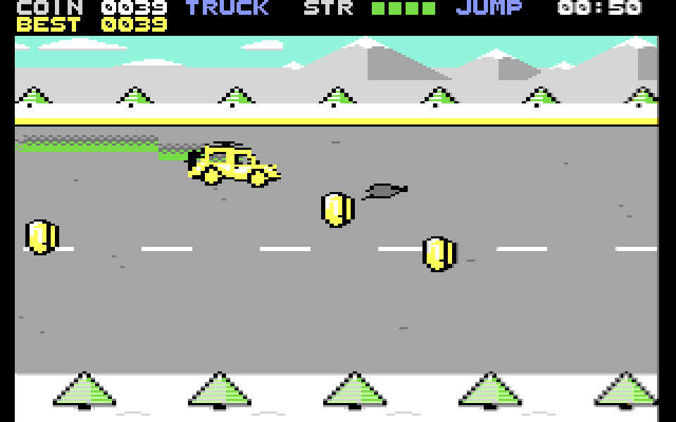
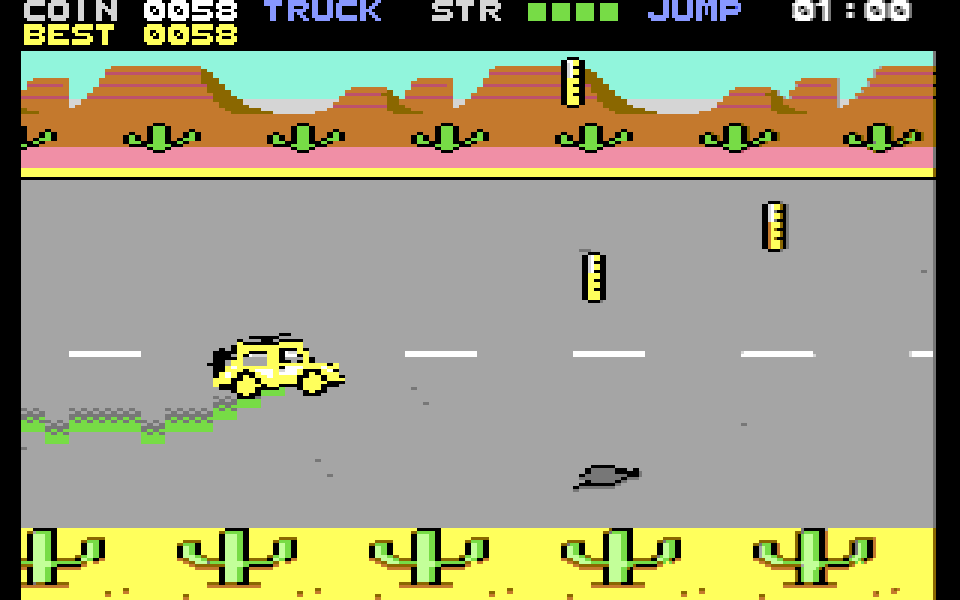
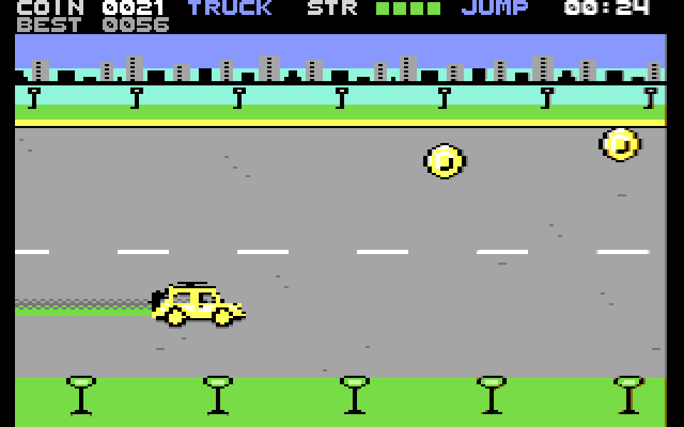
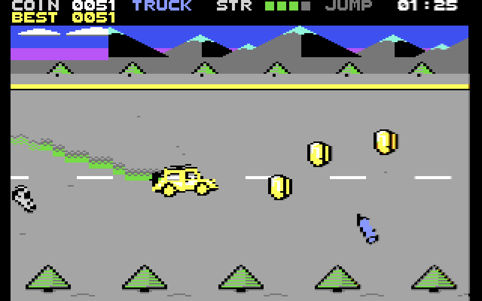
THE CAR RADIOLA RADIO DEL AUTO
Your car has a radio with eleven tracks, made for the game and arranged for the Commodore 128's SID chip: Pothole Boogie, Who Made the Holes, P.H.R., You Shook Me All Road Long, Back on Blacktop, Jump to Thrill, Coins Talk, Dirty Roads Done Pothole Deep, Highway Chug, Going the Last Mile and Gonna Jump Now.
Tu auto tiene una radio con once temas, hechos para el juego y arreglados para el chip SID de la Commodore 128: Pothole Boogie, Who Made the Holes, P.H.R., You Shook Me All Road Long, Back on Blacktop, Jump to Thrill, Coins Talk, Dirty Roads Done Pothole Deep, Highway Chug, Going the Last Mile y Gonna Jump Now.
T tunes in the next track and M turns the radio off and on. The name of the track shows at the top of the screen, and every run starts with the last track you picked.
T sintoniza el tema siguiente y M apaga y prende la radio. El nombre del tema aparece arriba en la pantalla, y cada partida empieza con el último tema que elegiste.
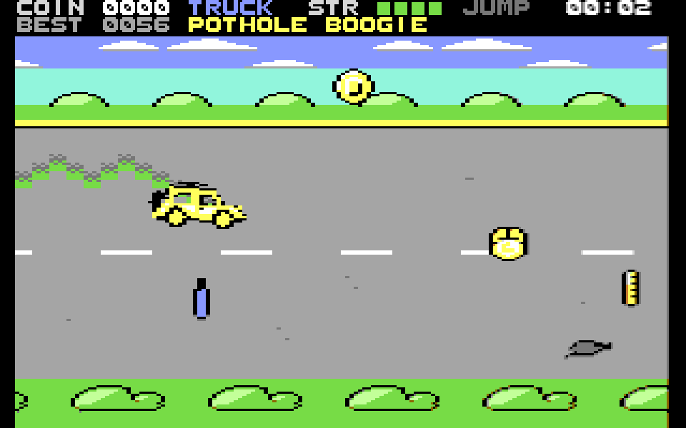
THE GARAGEEL GARAJE
| Car | Auto | Strength | Fortaleza | Speed | Velocidad | Price | Precio | |
|---|---|---|---|---|---|---|---|---|
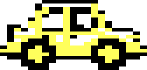 | Stock | 3 | NormalNormal | FreeGratis | ||||
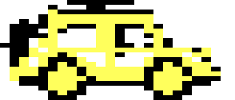 | Truck | 4 | NormalNormal | 200 | ||||
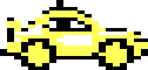 | Sport | 3 | FastRápida | 500 | ||||
| ??? | 4 | FastRápida | 700 |
Plus nine trails to buy, from plain colors to the Rainbow, and seven body colors to choose from, free. Everything you buy, your medals, your record and the Hall of Fame are saved on the disk.
Y nueve estelas para comprar, desde colores lisos hasta la Rainbow, y siete colores de carrocería para elegir, gratis. Todo lo que compras, tus medallas, tu récord y el salón de la fama se guardan en el disco.
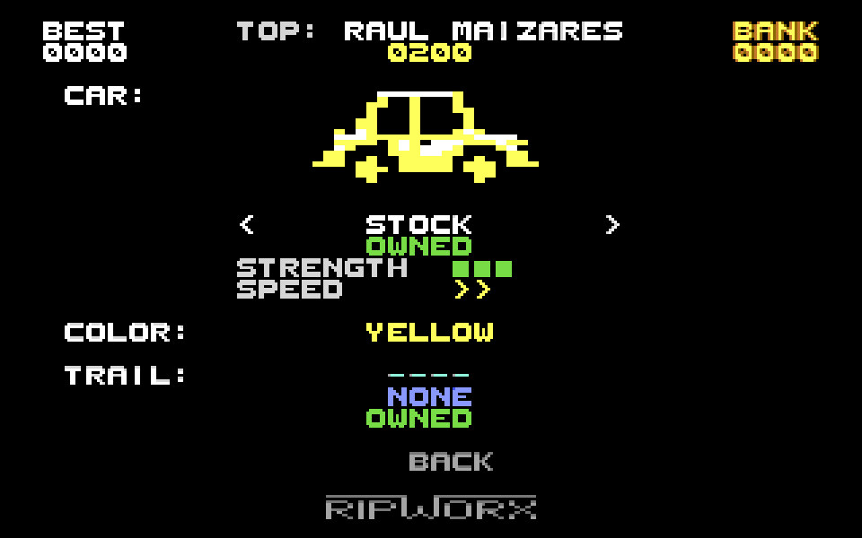
SCREENSPANTALLAS
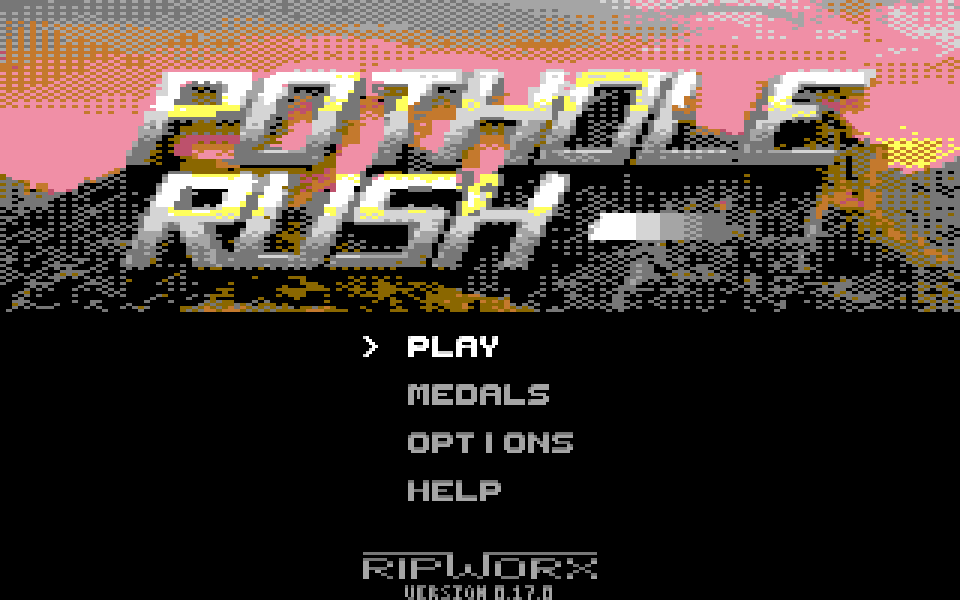
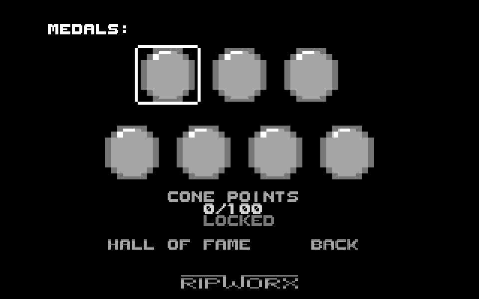
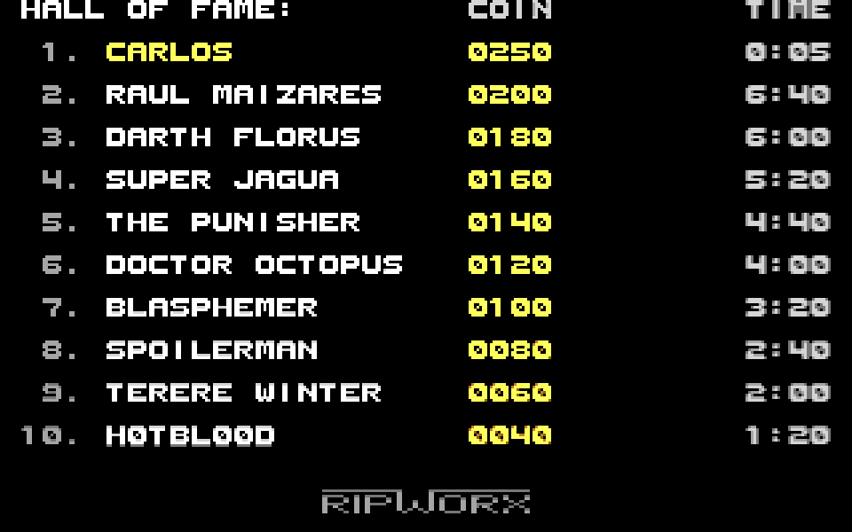
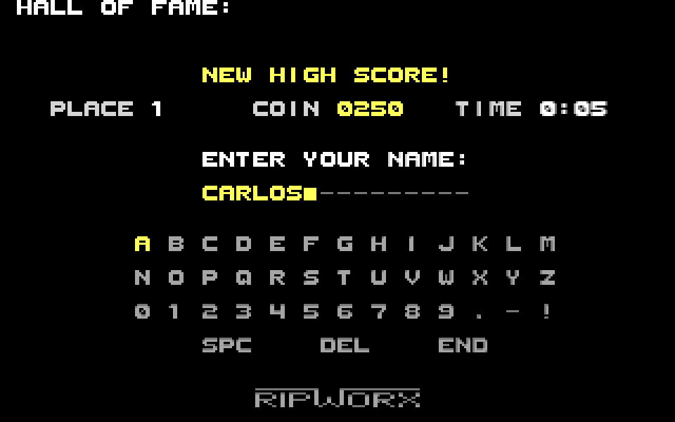
DOWNLOADDESCARGA
Version 1.0.0 for PAL and NTSC · 1.4 MBVersión 1.0.0 para PAL y NTSC · 1,4 MB
What's inside
Qué trae
.d64disk image, with the presentation and the loading screen- The instruction manual in English and in Spanish (PDF)
- Imagen de disco
.d64, con la presentación y la pantalla de carga - El manual de instrucciones en español y en inglés (PDF)
What you need
Qué necesitas
A Commodore 128 (PAL or NTSC: the game works out which one) with a 1541 or 1571 disk drive, or an SD2IEC, Pi1541 or Ultimate, and the 40-column screen. A joystick in either port, or just the keyboard. Or an emulator such as VICE (x128).
Una Commodore 128 (PAL o NTSC: el juego reconoce cuál es) con una disquetera 1541 o 1571, o una SD2IEC, Pi1541 o Ultimate, y la pantalla de 40 columnas. Un joystick en cualquier puerto, o solo el teclado. O un emulador como VICE (x128).
How to load it
Cómo cargarlo
In 128 mode, type RUN"POTHOLE RUSH". It takes a little over two
minutes to reach the menu on a 1541, and about one on a 1571. In VICE, open the
.d64 in x128 with the 40-column screen.
En el modo 128, escribe RUN"POTHOLE RUSH". Tarda algo más de dos
minutos en llegar al menú con una 1541, y alrededor de uno con una 1571. En VICE, abre el
.d64 en x128 con la pantalla de 40 columnas.
Instruction manual (PDF, 0.7 MB)
Manual de instrucciones (PDF, 0,7 MB)
Share it
Compártelo
You may copy and share the zip and everything in it, free of charge and for non-commercial purposes, as is and crediting its authors: CC BY-NC-ND 4.0 license.
Puedes copiar y compartir el zip y todo lo que trae, gratis y sin fines comerciales, tal cual y diciendo quiénes son sus autores: licencia CC BY-NC-ND 4.0.
Pothole Rush is free, and it's also on itch.io, where you can pay what you want. Any contribution helps us keep improving it and make new games.
Pothole Rush es gratis, y también está en itch.io, donde puedes pagar lo que quieras. Cualquier aporte nos ayuda a seguir mejorándolo y a hacer juegos nuevos.
Checksum: SHA256SUMSSuma de verificación: SHA256SUMS
WHAT'S DIFFERENT FROM THE ORIGINALQUÉ CAMBIA RESPECTO DEL ORIGINAL
- Joystick or keyboard instead of the mouse.
- Five landscapes in random order, each with its own obstacle, and an icy road in the snow.
- New music and sound effects for the SID chip, and a car radio with eleven tracks.
- Everything is saved on the disk: money, purchases, medals, options, the radio track and the Hall of Fame, which is new.
- A new medal for surviving a whole hour, and one more bar of strength for every car.
- Joystick o teclado en lugar del mouse.
- Cinco paisajes en orden al azar, cada uno con su obstáculo, y la ruta helada en la nieve.
- Música y efectos nuevos para el chip SID, y una radio en el auto con once temas.
- Todo se guarda en el disco: el dinero, las compras, las medallas, las opciones, el tema de la radio y el salón de la fama, que es nuevo.
- Una medalla nueva por aguantar una hora entera, y una barra más de fortaleza en cada auto.